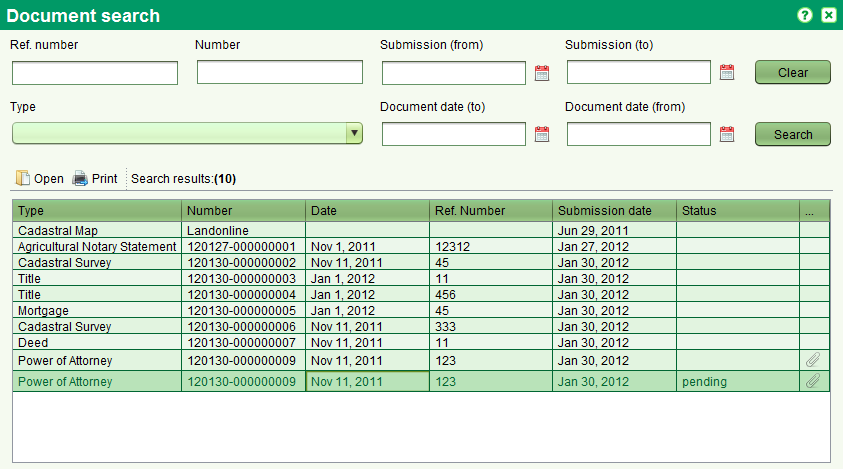
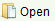
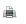

The Document Search screen allows you to find documents of interest for editing or viewing.
It can be accessed from the Search > Search Document menu or selecting 

You can search by any combination of Reference number, Number, Type, Submission date range and Document date range.
The Reference number, Number and Type also support partial and full matching
You can access the document form by selecting one document in the list and the pressing

You can also print the document selected by pressing

Also See